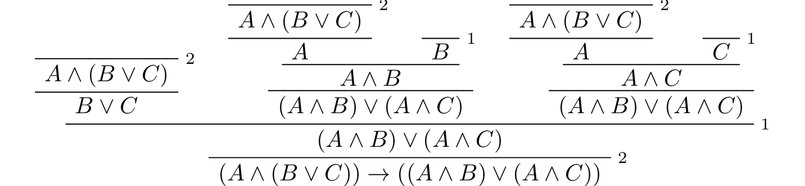

4. Propositional Logic in Lean¶
In this chapter, you will learn how to write proofs in Lean. We will start with a purely mechanical translation that will enable you to represent any natural deduction proof in Lean. We will see, however, that such a style of writing proofs is not very intuitive, nor does it yield very readable proofs. It also does not scale well.
We will then consider some mechanisms that Lean offers that support a more forward-directed style of argumentation. Since these proofs look more like informal proofs but can be directly translated to natural deduction, they will help us understand the relationship between the two.
4.1. Expressions for Propositions and Proofs¶
At its core, Lean is what is known as a type checker. This means that we can write expressions and ask the system to check that they are well formed, and also ask the system to tell us what type of object they denote. Try this:
variables A B C : Prop
#check A ∧ ¬ B → C
In the online version of this text, you can press the “try it!” button to copy the example to an editor window, and then hover over the markers on the text to read the messages.
In the example, we declare three variables ranging over propositions, and ask Lean to check the expression A ∧ ¬ B → C. The output of the #check command is A ∧ ¬ B → C : Prop, which asserts that A ∧ ¬ B → C is of type Prop. In Lean, every well-formed expression has a type.
The logical connectives are rendered in unicode. The following chart shows you how you can type these symbols in the editor, and also provides ascii equivalents, for the purists among you.
Unicode |
Ascii |
Lean input |
true |
||
false |
||
¬ |
not |
|
∧ |
/\ |
|
∨ |
\/ |
|
→ |
-> |
|
↔ |
<-> |
|
∀ |
forall |
|
∃ |
exists |
|
λ |
fun |
|
≠ |
~= |
|
So far, we have only talked about the first seven items on the list. We will discuss the quantifiers, lambda, and equality later. Try typing some expressions and checking them on your own. You should try changing one of the variables in the example above to D, or inserting a nonsense symbol into the expression, and take a look at the error message that Lean returns.
In addition to declaring variables, if P is any expression of type Prop, we can declare the hypothesis that P is true:
variables A B : Prop
variable h : A ∧ ¬ B
#check h
Formally, what is going on is that any proposition can be viewed as a type, namely, the type of proofs of that proposition. A hypothesis, or premise, is just a variable of that type. Building proofs is then a matter of writing down expressions of the correct type. For example, if P is any expression of type A ∧ B, then and.left P is an expression of type A, and and.right P is an expression of type B. In other words, if P is a proof of A ∧ B, and and.left P is a name for the proof you get by applying the left elimination rule for and:
Similarly, and.right P is the proof of B you get by applying the right elimination rule. So, continuing the example above, we can write
variables A B : Prop
variable h : A ∧ ¬ B
#check and.left h
#check and.right h
The two expressions represent, respectively, these two proofs:
Notice that in this way of representing natural deduction proofs, there are no “free floating” hypotheses. Every hypothesis has a label. In Lean, we will typically use expressions like h, h1, h2, … to label hypotheses, but you can use any identifier you want.
If h1 is a proof of A and h2 is a proof of B, then and.intro h1 h2 is a proof of A ∧ B. So we can continue the example above:
variables A B : Prop
variable h : A ∧ ¬ B
#check and.intro (and.right h) (and.left h)
This corresponds to the following proof:
What about implication? The elimination rule is easy: if P₁ is a proof of A → B and P₂ is a proof of A then P₁ P₂ is a proof of B. Notice that we do not even need to name the rule: you just write P₁ followed by P₂, as though you are applying the first to the second. If P₁ and P₂ are compound expressions, put parentheses around them to make it clear where each one begins and ends.
variables A B C D : Prop
variable h1 : A → (B → C)
variable h2 : D → A
variable h3 : D
variable h4 : B
#check h2 h3
#check h1 (h2 h3)
#check (h1 (h2 h3)) h4
Lean adopts the convention that applications associate to the left, so that an expression h1 h2 h3 is interpreted as (h1 h2) h3. Implications associate to the right, so that A → B → C is interpreted as A → (B → C). This may seem funny, but it is a convenient way to represent implications that take multiple hypotheses, since an expression A → B → C → D → E means that E follows from A, B, C, and D. So the example above could be written as follows:
variables A B C D : Prop
variable h1 : A → B → C
variable h2 : D → A
variable h3 : D
variable h4 : B
#check h2 h3
#check h1 (h2 h3)
#check h1 (h2 h3) h4
Notice that parentheses are still needed in the expression h1 (h2 h3).
The implication introduction rule is the tricky one, because it can cancel a hypothesis. In terms of Lean expressions, the rule translates as follows. Suppose A and B have type Prop, and, assuming h is the premise that A holds, P is proof of B, possibly involving h. Then the expression assume h : A, P is a proof of A → B. For example, we can construct a proof of A → A ∧ A as follows:
variable A : Prop
#check (assume h : A, and.intro h h)
Notice that we no longer have to declare A as a premise. The word assume makes the premise local to the expression in parentheses, and after the assumption is made, we can refer to h. Given the assumption h : A, and.intro h h is a proof of A ∧ A, and so the expression assume h : A, and.intro h h is a proof of A → A ∧ A. In this case, we could leave out the parentheses because the expression is unambiguous:
variable A : Prop
#check assume h : A, and.intro h h
Above, we proved ¬ B ∧ A from the premise A ∧ ¬ B. We can instead obtain a proof of A ∧ ¬ B → ¬ B ∧ A as follows:
variables A B : Prop
#check (assume h : A ∧ ¬ B, and.intro (and.right h) (and.left h))
All we did was move the premise into a local assume.
(By the way, the assume command is just alternative syntax for the lambda symbol, so we could also have written this:
variables A B : Prop
#check (λ h : A ∧ ¬ B, and.intro (and.right h) (and.left h))
You will learn more about the lambda symbol later.)
4.2. More commands¶
Let us introduce a new Lean command, example. This command tells Lean that you are about to prove a theorem, or, more generally, write down an expression of the given type. It should then be followed by the proof or expression itself.
variables A B : Prop
example : A ∧ ¬ B → ¬ B ∧ A :=
assume h : A ∧ ¬ B,
and.intro (and.right h) (and.left h)
When given this command, Lean checks the expression after the := and makes sure it has the right type. If so, it accepts the expression as a valid proof. If not, it raises an error.
Because the example command provides information as to the type of the expression that follows (in this case, the proposition being proved), it sometimes enables us to omit other information. For example, we can leave off the type of the assumption:
variables A B : Prop
example : A ∧ ¬ B → ¬ B ∧ A :=
assume h,
and.intro (and.right h) (and.left h)
Because Lean knows we are trying to prove an implication with premise A ∧ ¬ B, it can infer that when we write assume h, the identifier h labels the assumption A ∧ ¬ B.
We can also go in the other direction, and provide the system with more information, with the word show. If A is a proposition and P is a proof, the expression “show A, from P” means the same thing as P alone, but it signals the intention that P is a proof of A. When Lean checks this expression, it confirms that P really is a proof of A, before parsing the expression surrounding it. So, in our example, we could also write:
variables A B : Prop
example : A ∧ ¬ B → ¬ B ∧ A :=
assume h : A ∧ ¬ B,
show ¬ B ∧ A, from and.intro (and.right h) (and.left h)
We could even annotate the smaller expressions and.right h and and.left h, as follows:
variables A B : Prop
example : A ∧ ¬ B → ¬ B ∧ A :=
assume h : A ∧ ¬ B,
show ¬ B ∧ A, from and.intro
(show ¬ B, from and.right h)
(show A, from and.left h)
This is a good place to mention that Lean generally ignores whitespace, like indentation and returns. We could have written the entire example on a single line. In general, we will adopt conventions for indentation and line breaks that show the structure of proofs and make them easier to read.
Although in the examples above the show commands were not necessary, there are a number of good reasons to use this style. First, and perhaps most importantly, it makes the proofs easier for us humans to read. Second, it makes the proofs easier to write: if you make a mistake in a proof, it is easier for Lean to figure out where you went wrong and provide a meaningful error message if you make your intentions clear. Finally, proving information in the show clause often makes it possible for you to omit information in other places, since Lean can infer that information from your stated intentions.
There are notational variants. Rather than declare variables and premises beforehand, you can also present them as “arguments” to the example, followed by a colon:
example (A B : Prop) : A ∧ ¬ B → ¬ B ∧ A :=
assume h : A ∧ ¬ B,
show ¬ B ∧ A, from and.intro (and.right h) (and.left h)
There are two more tricks that can help you write proofs in Lean. The first is using sorry, which is a magical term in Lean which provides a proof of anything at all. It is also known as “cheating.” But cheating can help you construct legitimate proofs incrementally: if Lean accepts a proof with sorry’s, the parts of the proof you have written so far have passed Lean’s checks for correctness. All you need to do is replace each sorry with a real proof to complete the task.
variables A B : Prop
example : A ∧ ¬ B → ¬ B ∧ A :=
assume h, sorry
example : A ∧ ¬ B → ¬ B ∧ A :=
assume h, and.intro sorry sorry
example : A ∧ ¬ B → ¬ B ∧ A :=
assume h, and.intro (and.right h) sorry
example : A ∧ ¬ B → ¬ B ∧ A :=
assume h, and.intro (and.right h) (and.left h)
The second trick is the use of placeholders, represented by the underscore symbol. When you write an underscore in an expression, you are asking the system to try to fill in the value for you. This falls short of calling full-blown automation to prove a theorem; rather, you are asking Lean to infer the value from the context. If you use an underscore where a proof should be, Lean typically will not fill in the proof, but it will give you an error message that tells you what is missing. This will help you write proof terms incrementally, in a backward-driven fashion. In the example above, try replacing each sorry by an underscore, _, and take a look at the resulting error messages. In each case, the error tells you what needs to be filled in, and the variables and hypotheses that are available to you at that stage.
One more tip: if you want to delimit the scope of variables or premises introduced with the variables command, put them in a block that begins with the word section and ends with the word end. We will use this mechanism below.
4.3. Building Natural Deduction Proofs¶
In this section, we describe a mechanical translation from natural deduction proofs, by giving a translation for each natural deduction rule. We have already seen some of the correspondences, but we repeat them all here, for completeness.
4.3.1. Implication¶
We have already explained that implication introduction is implemented with assume, and implication elimination is written as application.
variables A B : Prop
example : A → B :=
assume h : A,
show B, from sorry
section
variable h1 : A → B
variable h2 : A
example : B := h1 h2
end
Since every example begins by declaring the necessary propositional variables, we will henceforth suppress that declaration in the text.
4.3.2. Conjunction¶
We have already seen that and-introduction is implemented with and.intro, and the elimination rules are and.left and and.right.
section
variables (h1 : A) (h2 : B)
example : A ∧ B := and.intro h1 h2
end
section
variable h : A ∧ B
example : A := and.left h
example : B := and.right h
end
4.3.3. Disjunction¶
The or-introduction rules are given by or.inl and or.inr.
section
variable h : A
example : A ∨ B := or.inl h
end
section
variable h : B
example : A ∨ B := or.inr h
end
The elimination rule is the tricky one. To prove C from A ∨ B, you need three arguments: a proof h of A ∨ B, a proof of C from A, and a proof of C from B. Using line breaks and indentation to highlight the structure as a proof by cases, we can write it with the following form:
section
variable h : A ∨ B
variables (ha : A → C) (hb : B → C)
example : C :=
or.elim h
(assume h1 : A,
show C, from ha h1)
(assume h1 : B,
show C, from hb h1)
end
Notice that we can reuse the label h1 in each branch, since, conceptually, the two branches are disjoint.
4.3.4. Negation¶
Internally, negation ¬ A is defined by A → false, which you can think of as saying that A implies something impossible. The rules for negation are therefore similar to the rules for implication. To prove ¬ A, assume A and derive a contradiction.
section
example : ¬ A :=
assume h : A,
show false, from sorry
end
If you have proved a negation ¬ A, you can get a contradiction by applying it to a proof of A.
section
variable h1 : ¬ A
variable h2 : A
example : false := h1 h2
end
4.3.5. Truth and falsity¶
The ex falso rule is called false.elim:
section
variable h : false
example : A := false.elim h
end
There isn’t much to say about true beyond the fact that it is trivially true:
example : true := trivial
4.3.6. Bi-implication¶
The introduction rule for “if and only if” is iff.intro.
example : A ↔ B :=
iff.intro
(assume h : A,
show B, from sorry)
(assume h : B,
show A, from sorry)
As usual, we have chosen indentation to make the structure clear. Notice that the same label, h, can be used on both branches, with a different meaning in each, because the scope of an assume is limited to the expression in which it appears.
The elimination rules are iff.elim_left and iff.elim_right:
section
variable h1 : A ↔ B
variable h2 : A
example : B := iff.elim_left h1 h2
end
section
variable h1 : A ↔ B
variable h2 : B
example : A := iff.elim_right h1 h2
end
Lean recognizes the abbreviation iff.mp for iff.elim_left, where “mp” stands for “modus ponens”. Similarly, you can use iff.mpr, for “modus ponens reverse”, instead of iff.elim_right.
4.3.7. Reductio ad absurdum (proof by contradiction)¶
Finally, there is the rule for proof by contradiction, which we will discuss in greater detail in Chapter 5. It is included for completeness here.
The rule is called by_contradiction. It has one argument, which is a proof of false from ¬ A. To use the rule, you have to ask Lean to allow classical reasoning, by writing open classical. You can do this at the beginning of the file, or any time before using it. If you say open classical in a section, it will remain in scope for that section.
section
open classical
example : A :=
by_contradiction
(assume h : ¬ A,
show false, from sorry)
end
4.3.8. Examples¶
In the last chapter, we constructed the following proof of \(A \to C\) from \(A \to B\) and \(B \to C\):
We can model this in Lean as follows:
variables A B C : Prop
variable h1 : A → B
variable h2 : B → C
example : A → C :=
assume h : A,
show C, from h2 (h1 h)
Notice that the hypotheses in the natural deduction proof that are not canceled are declared as variables in the Lean version.
We also constructed the following proof:
Here is how it is written in Lean:
example (A B C : Prop) : (A → (B → C)) → (A ∧ B → C) :=
assume h1 : A → (B → C),
assume h2 : A ∧ B,
show C, from h1 (and.left h2) (and.right h2)
This works because and.left h2 is a proof of A, and and.right h2 is a proof of B.
Finally, we constructed the following proof of \(A \wedge (B \vee C) \to (A \wedge B) \vee (A \wedge C)\):
Here is a version in Lean:
example (A B C : Prop) : A ∧ (B ∨ C) → (A ∧ B) ∨ (A ∧ C) :=
assume h1 : A ∧ (B ∨ C),
or.elim (and.right h1)
(assume h2 : B,
show (A ∧ B) ∨ (A ∧ C),
from or.inl (and.intro (and.left h1) h2))
(assume h2 : C,
show (A ∧ B) ∨ (A ∧ C),
from or.inr (and.intro (and.left h1) h2))
In fact, bearing in mind that assume is alternative syntax for the symbol λ, and that Lean can often infer the type of an assumption, we can make the proof remarkably brief:
example (A B C : Prop) : A ∧ (B ∨ C) → (A ∧ B) ∨ (A ∧ C) :=
λ h1, or.elim (and.right h1)
(λ h2, or.inl (and.intro (and.left h1) h2))
(λ h2, or.inr (and.intro (and.left h1) h2))
The proof is cryptic, though. Using such a style makes proofs hard to write, read, understand, maintain, and debug. In the next section we will describe a remarkably simple device that makes it much easier to understand what is going on.
4.4. Forward Reasoning¶
Lean supports forward reasoning by allowing you to write proofs using the have command.
variables A B C : Prop
variable h1 : A → B
variable h2 : B → C
example : A → C :=
assume h : A,
have h3 : B, from h1 h,
show C, from h2 h3
Writing a proof with have h : A, from P, ... h ... has the same effect as writing ... P .... This have command checks that P is a proof of A, and then give you the label h to use in place of P. Thus the last line of the previous proof can be thought of as abbreviating show C, from h2 (h1 h), since h3 abbreviates h1 h. Such abbreviations can make a big difference, especially when the proof P is very long.
There are a number of advantages to using have. For one thing, it makes the proof more readable: the example above states B explicitly as an auxiliary goal. It can also save repetition: h3 can be used repeatedly after it is introduced, without duplicating the proof. Finally, it makes it easier to construct and debug the proof: stating B as an auxiliary goal makes it easier for Lean to deliver an informative error message when the goal is not properly met.
In the last section, we considered the following proof:
example (A B C : Prop) : (A → (B → C)) → (A ∧ B → C) :=
assume h1 : A → (B → C),
assume h2 : A ∧ B,
show C, from h1 (and.left h2) (and.right h2)
Using have, it can be written more perspicuously as follows:
example (A B C : Prop) : (A → (B → C)) → (A ∧ B → C) :=
assume h1 : A → (B → C),
assume h2 : A ∧ B,
have h3 : A, from and.left h2,
have h4 : B, from and.right h2,
show C, from h1 h3 h4
We can be even more verbose, and add another line:
example (A B C : Prop) : (A → (B → C)) → (A ∧ B → C) :=
assume h1 : A → (B → C),
assume h2 : A ∧ B,
have h3 : A, from and.left h2,
have h4 : B, from and.right h2,
have h5 : B → C, from h1 h3,
show C, from h5 h4
Adding more information doesn’t always make a proof more readable; when the individual expressions are small and easy enough to understand, spelling them out in detail can introduce clutter. As you learn to use Lean, you will have to develop your own style, and use your judgment to decide which steps to make explicit.
Here is how some of the basic inferences look, when expanded with have. In the and-introduction rule, it is a matter showing each conjunct first, and then putting them together:
example (A B : Prop) : A ∧ B → B ∧ A :=
assume h1 : A ∧ B,
have h2 : A, from and.left h1,
have h3 : B, from and.right h1,
show B ∧ A, from and.intro h3 h2
Compare that with this version, which instead states first that we will use the and.intro rule, and then makes the two resulting goals explicit:
example (A B : Prop) : A ∧ B → B ∧ A :=
assume h1 : A ∧ B,
show B ∧ A, from
and.intro
(show B, from and.right h1)
(show A, from and.left h1)
Once again, at issue is only readability. Lean does just fine with the following short version:
example (A B : Prop) : A ∧ B → B ∧ A :=
λ h, and.intro (and.right h) (and.left h)
When using the or-elimination rule, it is often clearest to state the relevant disjunction explicitly:
example (A B C : Prop) : C :=
have h : A ∨ B, from sorry,
show C, from or.elim h
(assume h1 : A,
show C, from sorry)
(assume h2 : B,
show C, from sorry)
Here is a have-structured presentation of an example from the previous section:
example (A B C : Prop) : A ∧ (B ∨ C) → (A ∧ B) ∨ (A ∧ C) :=
assume h1 : A ∧ (B ∨ C),
have h2 : A, from and.left h1,
have h3 : B ∨ C, from and.right h1,
show (A ∧ B) ∨ (A ∧ C), from
or.elim h3
(assume h4 : B,
have h5 : A ∧ B, from and.intro h2 h4,
show (A ∧ B) ∨ (A ∧ C), from or.inl h5)
(assume h4 : C,
have h5 : A ∧ C, from and.intro h2 h4,
show (A ∧ B) ∨ (A ∧ C), from or.inr h5)
4.5. Definitions and Theorems¶
Lean allows us to name definitions and theorems for later use. For example, here is a definition of a new “connective”:
def triple_and (A B C : Prop) : Prop :=
A ∧ (B ∧ C)
As with the example command, it does not matter whether the arguments A, B, and C are declared beforehand with the variables command, or with the definition itself. We can then apply the definition to any expressions:
variables D E F G : Prop
#check triple_and (D ∨ E) (¬ F → G) (¬ D)
Later, we will see more interesting examples of definitions, like the following function from natural numbers to natural numbers, which doubles its input:
def double (n : ℕ) : ℕ := n + n
What is more interesting right now is that Lean also allows us to name theorems, and use them later, as rules of inference. For example, consider the following theorem:
theorem and_commute (A B : Prop) : A ∧ B → B ∧ A :=
assume h, and.intro (and.right h) (and.left h)
Once we have defined it, we can use it freely:
variables C D E : Prop
variable h1 : C ∧ ¬ D
variable h2 : ¬ D ∧ C → E
example : E := h2 (and_commute C (¬ D) h1)
It is annoying in this example that we have to give the arguments C and ¬ D explicitly, because they are implicit in h1. In fact, Lean allows us to tell this to Lean in the definition of and_commute:
theorem and_commute {A B : Prop} : A ∧ B → B ∧ A :=
assume h, and.intro (and.right h) (and.left h)
Here the squiggly braces indicate that the arguments A and B are implicit, which is to say, Lean should infer them from the context when the theorem is used. We can then write the following instead:
variables C D E : Prop
variable h1 : C ∧ ¬ D
variable h2 : ¬ D ∧ C → E
example : E := h2 (and_commute h1)
Indeed, Lean’s library has a theorem, and_comm, defined in exactly this way.
By the way, we could avoid the assume step in the proof of and_comm by making the hypothesis into an argument:
theorem and_commute {A B : Prop} (h : A ∧ B) : B ∧ A :=
and.intro (and.right h) (and.left h)
The two definitions yield the same result.
Definitions and theorems are important in mathematics; they allow us to build up complex theories from fundamental principles. Lean also accepts the word lemma instead of theorem.
What is interesting is that in interactive theorem proving, we can even define familiar patterns of inference. For example, all of the following inferences were mentioned in the last chapter:
namespace hidden
variables {A B : Prop}
theorem or_resolve_left (h1 : A ∨ B) (h2 : ¬ A) : B :=
or.elim h1
(assume h3 : A, show B, from false.elim (h2 h3))
(assume h3 : B, show B, from h3)
theorem or_resolve_right (h1 : A ∨ B) (h2 : ¬ B) : A :=
or.elim h1
(assume h3 : A, show A, from h3)
(assume h3 : B, show A, from false.elim (h2 h3))
theorem absurd (h1 : ¬ A) (h2 : A) : B :=
false.elim (h1 h2)
end hidden
In fact, Lean’s library defines or.resolve_left, or.resolve_right, and absurd. We used the namespace command to avoid naming conflicts, which would have raised an error.
When we ask you to prove basic facts from propositional logic in Lean, as with propositional logic, our goal is to have you learn how to use Lean’s primitives. As a result, for those exercises, you should not use facts from the library. As we move towards real mathematics, however, you can use facts from the library more freely.
4.6. Additional Syntax¶
In this section, we describe some extra syntactic features of Lean, for power users. The syntactic gadgets are often convenient, and sometimes make proofs look prettier.
For one thing, you can use subscripted numbers with a backslash. For example, you can write h₁ by typing h\1. The labels are irrelevant to Lean, so the difference is only cosmetic.
Another feature is that you can omit the label in an assume statement, providing an “anonymous” hypothesis. You can then refer back to the last anonymous assumption using the keyword this:
example : A → A ∨ B :=
assume : A,
show A ∨ B, from or.inl this
Alternatively, you can refer back to unlabeled assumptions by putting them in French quotes:
example : A → B → A ∧ B :=
assume : A,
assume : B,
show A ∧ B, from and.intro ‹A› ‹B›
You can also use the word have without giving a label, and refer back to them using the same conventions. Here is an example that uses these features:
theorem my_theorem {A B C : Prop} :
A ∧ (B ∨ C) → (A ∧ B) ∨ (A ∧ C) :=
assume h : A ∧ (B ∨ C),
have A, from and.left h,
have B ∨ C, from and.right h,
show (A ∧ B) ∨ (A ∧ C), from
or.elim ‹B ∨ C›
(assume : B,
have A ∧ B, from and.intro ‹A› ‹B›,
show (A ∧ B) ∨ (A ∧ C), from or.inl this)
(assume : C,
have A ∧ C, from and.intro ‹A› ‹C›,
show (A ∧ B) ∨ (A ∧ C), from or.inr this)
Another trick is that you can write h.left and h.right instead of and.left h and and.right h whenever h is a conjunction, and you can write ⟨h1, h2⟩ (using \< and \>) instead of and.intro h1 h2 whenever Lean can figure out that a conjunction is what you are trying to prove. With these conventions, you can write the following:
example (A B : Prop) : A ∧ B → B ∧ A :=
assume h : A ∧ B,
show B ∧ A, from ⟨h.right, h.left⟩
This is nothing more than shorthand for the following:
example (A B : Prop) : A ∧ B → B ∧ A :=
assume h : A ∧ B,
show B ∧ A, from and.intro (and.right h) (and.left h)
Even more concisely, you can write this:
example (A B : Prop) : A ∧ B → B ∧ A :=
assume h, ⟨h.right, h.left⟩
You can even take apart a conjunction with an assume, so that this works:
example (A B : Prop) : A ∧ B → B ∧ A :=
assume ⟨h₁, h₂⟩, ⟨h₂, h₁⟩
Similarly, if h is a biconditional, you can write h.mp and h.mpr instead of iff.mp h and iff.mpr h, and you can write ⟨h1, h2⟩ instead of iff.intro h1 h2. As a result, Lean understands these proofs:
example (A B : Prop) : B ∧ (A ↔ B) → A :=
assume ⟨hB, hAB⟩,
hAB.mpr hB
example (A B : Prop) : A ∧ B ↔ B ∧ A :=
⟨assume ⟨h₁, h₂⟩, ⟨h₂, h₁⟩, assume ⟨h₁, h₂⟩, ⟨h₂, h₁⟩⟩
Finally, you can add comments to your proofs in two ways. First, any text after a double-dash -- until the end of a line is ignored by the Lean processor. Second, any text between /- and -/ denotes a block comment, and is also ignored. You can nest block comments.
/- This is a block comment.
It can fill multiple lines. -/
example (A : Prop) : A → A :=
assume : A, -- assume the antecedent
show A, from this -- use it to establish the conclusion
4.7. Exercises¶
Prove the following in Lean:
variables A B C D : Prop
example : A ∧ (A → B) → B :=
sorry
example : A → ¬ (¬ A ∧ B) :=
sorry
example : ¬ (A ∧ B) → (A → ¬ B) :=
sorry
example (h₁ : A ∨ B) (h₂ : A → C) (h₃ : B → D) : C ∨ D :=
sorry
example (h : ¬ A ∧ ¬ B) : ¬ (A ∨ B) :=
sorry
example : ¬ (A ↔ ¬ A) :=
sorry